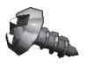
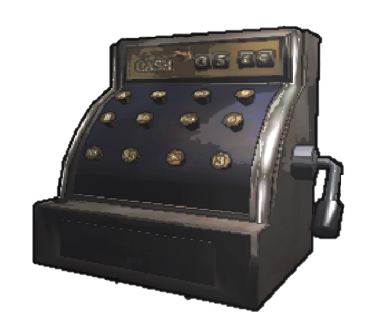

Scrap is the main collectable found in the facilities. Loot tables define where and how often certain scrap can spawn. Unlike Equipment, Scrap is lost upon team death, this includes items that have a use like Stop Signs and the Double Barrel.
| Name | Image | Min Value | Max Value | Weight | Conductive | Has Battery | Two Handed | Info |
|---|---|---|---|---|---|---|---|---|
| Airhorn | 52 | 72 | 0 | No | No | No |
Plays an air horn sound upon use. Can alert Eyeless Dogs. |
|
| Apparatus | 80 | 80 | 32 | Yes | No | Yes |
When taken, all Secure doors will open and all lights will turn off. The apparatus emits a faint glow. Players will be warned of a radiation increase when removing the apparatus, this radiation increase may amplify the entity spawn rate and or agitate hostile entities. Taking this out is an irreversible process.
|
|
| Bee Hive | 40 | 150 | 0 | Yes | No | Yes |
If picked up, causes Circuit Bees to target the player or fly around the map aimlessly if they are too far from any nest Circuit bees also attack employees who get too close to the Bee Hive. (roughly scanning distance) |
|
| Big bolt |  | 20 | 32 | 19 | Yes | No | No | |
| Bottles | 44 | 56 | 19 | No | No | Yes | ||
| Brass bell | 48 | 80 | 24 | Yes | No | No | ||
| Candy | 6 | 36 | 11 | No | No | No | ||
| Cash register |  | 80 | 160 | 84 | Yes | No | Yes |
Plays a cash register sound upon use. Can alert Eyeless Dogs. |
| Chemical jug |  |
32 | 84 | 32 | No | No | Yes | Only spawns on Vow. |
| Clown horn | 52 | 72 | 0 | Yes | No | No |
Plays a clown horn sound upon use. Can alert Eyeless Dogs. |
|
| Coffee mug | 24 | 68 | 5 | No | No | No | ||
| Comedy | 28 | 52 | 11 | No | No | No |
If put on, has a 65% chance to turn a player into a Masked. Converts players after a random interval of time typically ranging from roughly 1 to 20 seconds. Note: Will not convert players who are holding out the mask, only players who hold it onto their face. |
|
| Cookie mold pan | 12 | 40 | 16 | No | No | No | ||
| DIY-Flashbang |  |
10 | 28 | 5 | No | No | No | Its function is similar to that of a Stun grenade, though it will detonate upon use and cannot be thrown, the detonation also destroys the item. |
| Double-barrel |  |
30 | 90 | 16 | No | No | No | Dropped by Nutcrackers, if loaded with Shotgun shells, it can be shot. |
| Dust pan | 12 | 32 | 0 | No | No | No | Only spawns on Experimentation. | |
| Egg beater | 12 | 44 | 11 | Yes | No | No | ||
| Fancy lamp | 60 | 128 | 21 | Yes | No | Yes | Emits a moderate light below it | |
| Flask | 16 | 44 | 19 | Yes | No | No | ||
| Gift Box | 12 | 28 | 19 | No | No | No | Using the Gift Box destroys it and drops a random scrap item. This item can have a value higher than the usual value of the item. It is advised to only open gift boxes on the ship as it is possible to give a 2 handed item or an item that is heavier than the gift box itself. | |
| Gold bar | 102 | 210 | 77 | Yes | No | No | While being the most valuable scrap to find, it is also the heaviest one handed item and extremely rare. | |
| Golden Cup |  |
40 | 80 | 16 | No | No | No | |
| Hair brush | 8 | 36 | 11 | No | No | No | ||
| Hairdryer | 60 | 100 | 7 | No | Yes | No |
Can be used ten times with each use taking 10% of its power. While on, it makes a loud blowing noise. Can alert Eyeless Dogs. |
|
| Jar of pickles | 32 | 60 | 16 | No | No | No | ||
| Large axel | 36 | 56 | 16 | Yes | No | Yes | ||
| Laser pointer | 32 | 100 | 0 | No | Yes | No | Can be used to emit a dim orange laser similar to that of a Turret. This laser is visible even through walls. The length of the laser is unclear and needs further testing. | |
| Magic 7 ball | 36 | 72 | 16 | No | No | No | ||
| Magnifying glass | 44 | 60 | 11 | No | No | No | ||
| Old phone | 48 | 64 | 11 | No | No | No |
Plays a dial tone or screaming sound occasionally. Can alert Eyeless Dogs. |
|
| Painting | 60 | 124 | 32 | No | No | Yes | ||
| Perfume bottle | 48 | 104 | 0 | No | No | No | ||
| Pill bottle | 16 | 40 | 0 | No | No | No | ||
| Plastic fish | 28 | 40 | 0 | No | No | No | ||
| Player Body | 5 | 5 | 11 | No | No | Yes | Retrieving these lowers the penalty fine for players dying. This will de-spawn when leaving a planet so one can only be sold if a player dies at the Company Building. Selling the body prevents you from being able to retrieve it making you receive the whole fine for someone dying. This is only wise to do if you need roughly 5 credits to meet the quota. | |
| Red soda | 18 | 90 | 7 | Yes | No | No | ||
| Remote | 20 | 48 | 0 | No | No | No |
Can be used to toggle the ship's light. Will not alert Eyeless Dogs with clicking. |
|
| Ring | 52 | 80 | 16 | Yes | No | No | ||
| Robot toy |
Click for sound |
56 | 88 | 21 | Yes | No | No |
Plays noise when in the player's inventory. There's a slim chance it won't play a noise when being picked up or equipped. It can appear smiling or frowning when held, its arm moving more if happy and less if sad. This is purely visual and has no affect on gameplay. Can alert Eyeless Dogs. |
| Rubber Ducky | 2 | 100 | 0 | No | No | No |
Makes a quacking noise when equipped or dropped. Can alert Eyeless Dogs. |
|
| Steering wheel |  |
16 | 32 | 16 | No | No | No | |
| Stop sign |  |
20 | 52 | 21 | Yes | No | No | Has the same function as a shovel but is around thrice as heavy. |
| Tattered metal sheet |  |
10 | 22 | 26 | Yes | No | No | |
| Tea kettle |  |
32 | 56 | 21 | Yes | No | No | |
| Teeth |  |
60 | 84 | 0 | No | No | No |
Has a chance to start chattering and make noise when equipped or dropped. If dropped whilst chattering it will move around in a small circle motion. Can alert Eyeless Dogs. |
| Toothpaste |  |
14 | 48 | 0 | No | No | No | |
| Toy cube |  |
24 | 44 | 0 | No | No | No | |
| Tragedy |  |
28 | 52 | 11 | No | No | No |
If put on, has a 100% chance to turn a player into a Masked. Converts players nearly instantly. Note: Will not convert players who are holding out the mask, only players who have put it on. |
| V-type engine |  |
20 | 56 | 16 | Yes | No | Yes | |
| Whoopie-Cushion |
 Click for sound
Click for sound
|
6 | 20 | 0 | Yes | No | No |
Makes a noise when stepped on. Can be used as an alternative for the bell to sell scrap at the Company counter by stepping on it from a distance. Can alert Eyeless Dogs. |
| Yield sign |  |
18 | 36 | 42 | Yes | No | No | Has the same function as a shovel but weighs significantly more. |